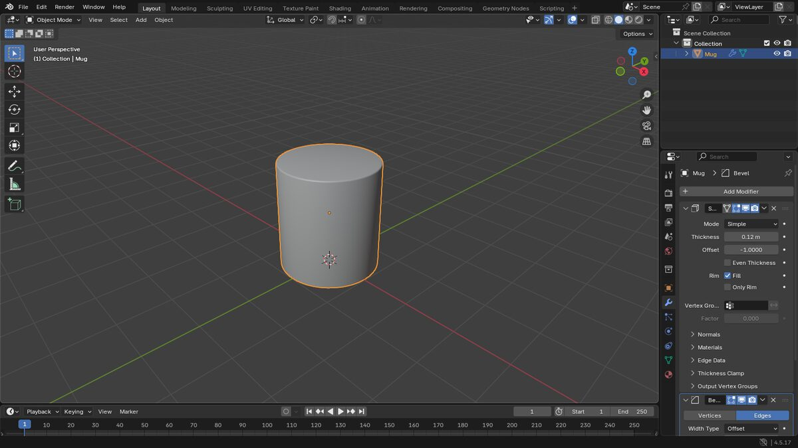

Lesson 7 of 8
Modifiers: Change a Shape Without Editing It
Learn what modifiers are, and add Solidify and Bevel to a simple cylinder.
A modifier changes how an object looks or behaves without changing its mesh. You can switch it off, change its numbers or delete it at any time, so it is a safe way to experiment. In this lesson and the next one we start a second project: a mug.
1. Start with a cylinder
Delete the objects in a new scene, press Shift + A and choose Mesh > Cylinder. Move it up with G, Z, 1.1, Enter so it sits on the floor grid. Right-click it and choose Shade Smooth.
2. Open the Modifiers tab
In Properties, click the Modifiers tab (the blue wrench icon). Click Add Modifier to see the list. Modifiers are grouped as Edit, Generate, Deform and so on.
3. Add Solidify and Bevel
- Choose Add Modifier > Generate > Solidify. It gives a flat surface thickness. We use a Thickness of
0.12. - Add Generate > Bevel. Set Width to
0.03and Segments to3to round the edges.

A closed cylinder has no open side, so Solidify has nothing to thicken yet. In the next lesson we open the top.
Exercise
Change the Solidify Thickness to 0.3, then back to 0.12. Switch the Bevel off with the monitor icon in its header and see the edge change.